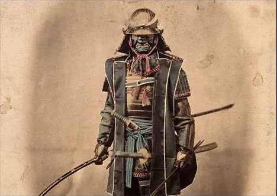
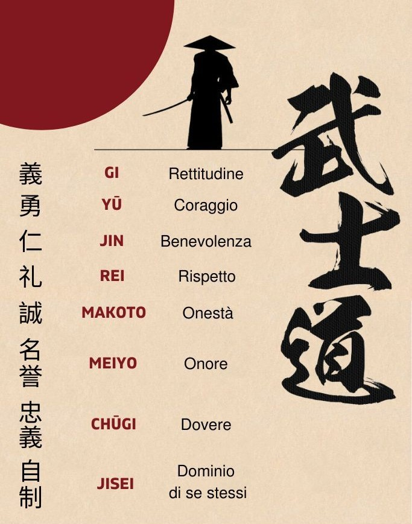

Il *Bushidō* (武士道, "via del guerriero”) è il codice etico che definiva il comportamento ideale del samurai. Non fu mai un unico testo, ma un insieme di valori trasmessi attraverso secoli di pratica, filosofia e religione.
Le sue radici affondano nel confucianesimo (dovere, gerarchia), nello shintoismo (lealtà, purezza spirituale) e nel buddhismo zen (autocontrollo, accettazione della morte). Durante il periodo Edo, con la fine delle guerre, il Bushidō fu formalizzato in opere come *Hagakure* di Yamamoto Tsunetomo e *Gorin no Sho* ("Il libro dei cinque anelli”) di Miyamoto Musashi. Questi testi cercavano di adattare l’etica guerriera a un’epoca di pace. I valori fondamentali del Bushidō includevano:
Il samurai ideale doveva vivere con disciplina e morire senza paura, mantenendo la propria dignità anche nel suicidio rituale (*seppuku*), considerato un modo di espiare il disonore. Tuttavia, storicamente il Bushidō non fu sempre rispettato: molti samurai agivano per interesse politico o economico, e l’immagine di guerriero "puro” è in parte frutto di una mitizzazione successiva. Nel XIX e XX secolo, con la costruzione del Giappone moderno, il Bushidō fu reinterpretato in chiave patriottica e nazionale. L’idea di lealtà e sacrificio per il bene comune influenzò la mentalità militare e persino l’etica aziendale contemporanea giapponese.
Wikipedia.org History.com Japanesesword.net
Torna alla home page →